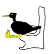

About me
I’ve got skills like english at a strong intermediate level (took an exam to prove it). Also have a driving licence (category b), but in the city I prefer using my bike. I’ve got confidence in the usage of gnu/linux systems, and also familiar with code writing and OOP programming paradigm. I consider myself creative, openminded, but also hardworker.
üì± +3630 7478050
✉ tombacz.kristof@gmail.com
 tombacz.kristof
tombacz.kristof
 kristoftombacz
kristoftombacz
Education
-
2010 - present
Engineering Information Technology
at Óbuda University -
2015
SQL Database Management Course
at Pentaschool
-
2014
Basic Java Course
at Pont Systems
Employment
-
2013 - 2014
Webshop Maintance
website design, data upload, contact with distributors
-
2010 - 2013
Cashier/Host
working with contactless card readers, daily contact with the technical department as summer job
Personal Interests
I can tell that I'm a huge football and esports fan, both doing and watching. I meme and draw a lot too.
I'm really talented as you can see.
Kristóf Tombácz
Green Fox Academy
Budapest, Hungary